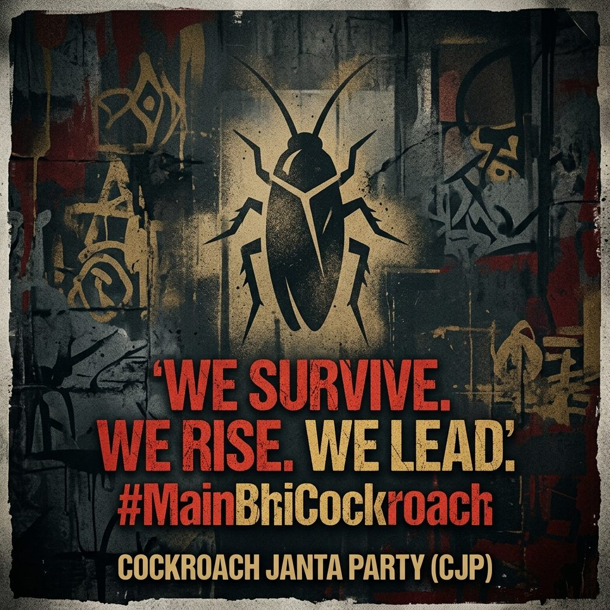
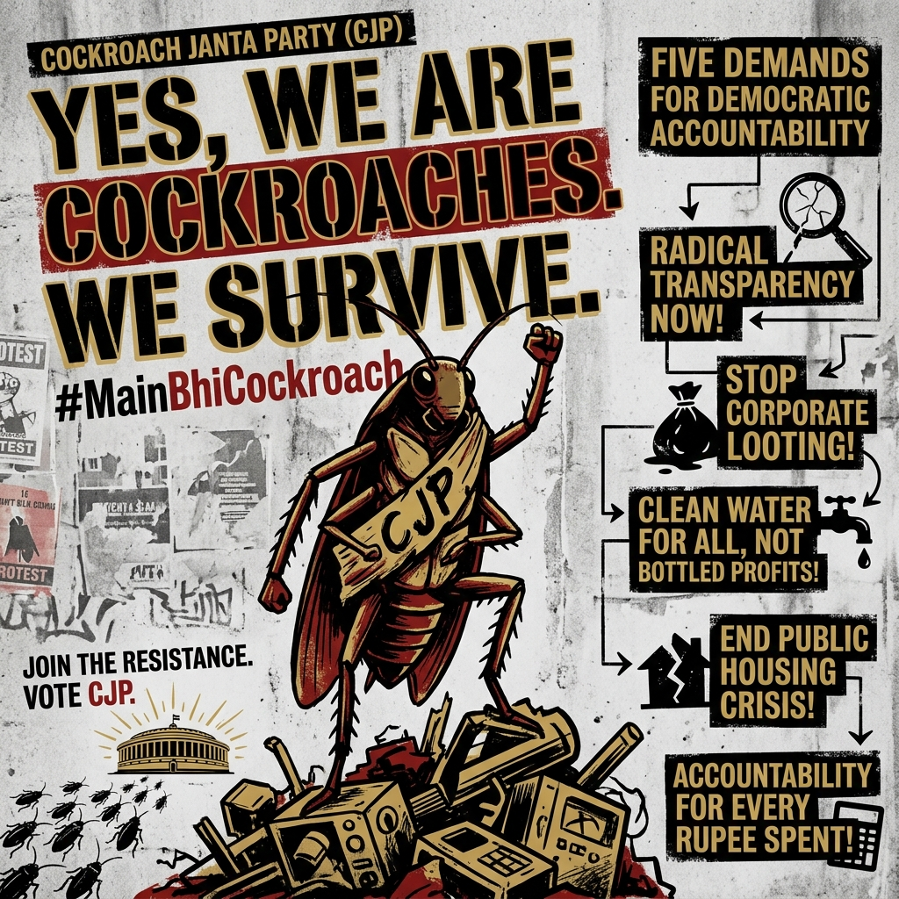
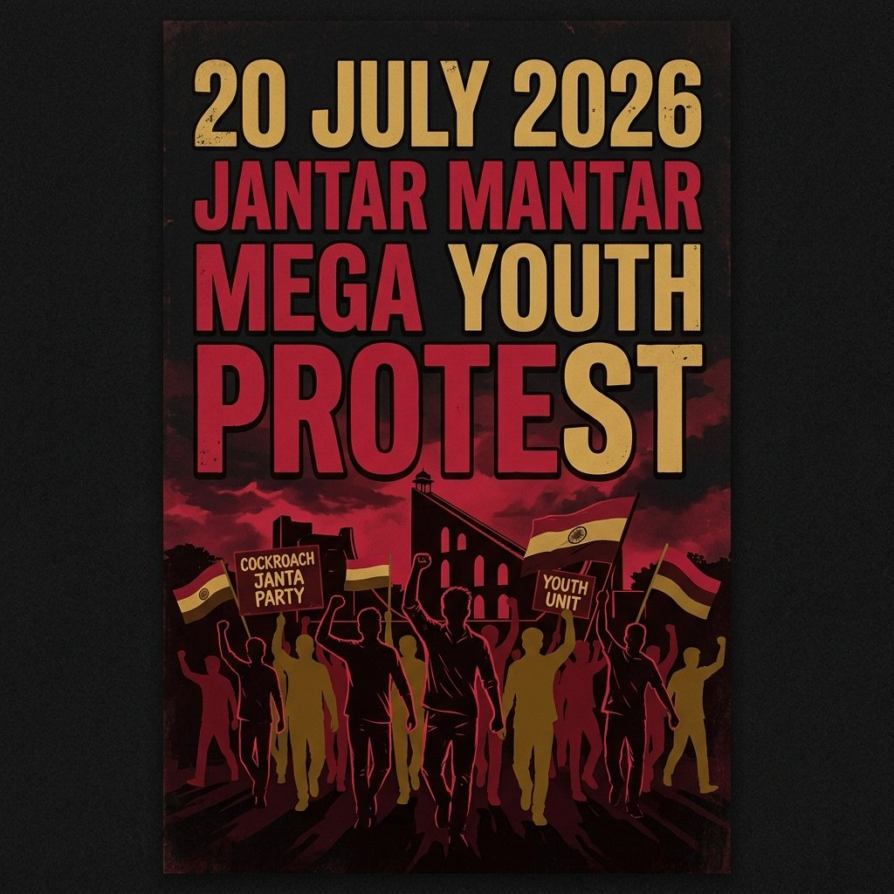

Courtroom Remarks Spark Outrage
CJI Surya Kant remarks comparing certain unemployed youth to "cockroaches & parasites" trigger nationwide Gen Z backlash online.
Cockroach Janta Party · Est. 16 May 2026
Because degrees are temporary, survival is permanent.
Welcome to the official portal of Cockroach Janta Party Wale. We are a youth satirical political movement in India, founded by Abhijeet Dipke on 16 May 2026, after the Chief Justice of India compared some unemployed youth and critics to "cockroaches & parasites." Rather than retreating, millions of students and young professionals across India joined the movement under the viral hashtag #MainBhiCockroach — reclaiming the label as a badge of survival, resilience, and resistance against system failure.

🔥 TRENDING NOW
✊ SWARM MANIFESTOTRENDING SWARM UPDATES (20 & 21 JULY)
Massive youth uprising in New Delhi over NEET paper leak scandals and student reforms. Here is everything that transpired yesterday and today on the ground.
Over 100,000 CJP student supporters marched towards Parliament on the opening day of the Monsoon Session. Protesters demanded the immediate resignation of Union Education Minister Dharmendra Pradhan.
Police Action: Security forces deployed tear gas and batons (lathicharge) near Jantar Mantar to disperse the crowd. Local internet shutdowns were enforced and multiple student coordinators were detained.
Ministerial Dialogue: CJP representatives Saurav Das and Ashutosh Ranka met Union Health Minister J.P. Nadda to present their demands. Nadda assured that the cabinet would hold internal discussions on exam safety and address the detention of activist Sonam Wangchuk.
Protest Status: Founder Abhijeet Dipke's hunger strike enters Day 4 under high police surveillance, declaring that the swarm will not back down until all student detainees are freed unconditionally.
Key Demands: Immediate independent third-party audit of NEET & competitive exam servers, 5-year cooling off period for retiring judges, and 50% reservation for women in Parliament.
CJP legal swarm files emergency motion in Delhi High Court seeking unconditional release of student coordinators detained during the Sansad march under Article 21 (Personal Liberty).
🔴 LIVE GOOGLE NEWS & TRENDING POSTERS ENGINE
Real-time live news updates fetched automatically from Google News, RSS feeds, and CJP Swarm Bureau regarding youth exams, NEET reforms, student protests, and trending posters.
Campaign art
More artwork



Key Milestones
From courtroom outrage to high court rulings and street mobilisations — how CJP grew into India's largest youth satire front.
CJI Surya Kant remarks comparing certain unemployed youth to "cockroaches & parasites" trigger nationwide Gen Z backlash online.
30-year-old strategist Abhijeet Dipke launches Cockroach Janta Party. Millions join under #MainBhiCockroach within days.
Government orders blocking of @cjp_official on X under IT Act provisions. Dipke immediately files challenge in Delhi High Court.
Allahabad High Court (Lucknow bench) dismisses petition seeking NIA/ED investigation against CJP, citing lack of jurisdiction.
Delhi High Court directs government to unblock CJP's official account on X, establishing digital expression rights for satire.
Following Sonam Wangchuk's eviction by Delhi Police, CJP founder Abhijeet Dipke goes on an indefinite hunger strike at Jantar Mantar. Brief detention and ink attack reported.
Over 100,000+ students assemble at Jantar Mantar, New Delhi for exam integrity, paper leak accountability, and student rights.
CJP representatives hold critical talks with Health Minister JP Nadda on exam reforms. Founder Abhijeet Dipke continues strike for detainee release.
The Core Mission
To channel the constructive frustration of India's overqualified and underemployed youth, the Cockroach Janta Party Wale movement has outlined a specific 5-Point Swarm Manifesto demanding systemic reforms:
We demand a permanent cooling-off period of at least 5 years for retiring Supreme Court and High Court judges. This prevents post-retirement political office appointments, Rajya Sabha seats, or government nominations, ensuring the judiciary remains completely independent and unbiased.
If a citizen's registered vote is found deleted on election day, the Chief Election Commissioner and returning officers must be held legally and personally accountable. Voting is a fundamental right, and administrative errors cannot be tolerated.
Mandatory 50% reservation for women in Parliament, state legislative assemblies, and the central cabinet. Equal representation ensures balanced policy-making and empowers the female workforce across all states.
Independent media licensing laws to prevent corporate monopolies from controlling news portals. The Cockroach Janata Party demands decentralized news outlets to ensure public interest journalism is protected.
Any elected MLA or MP who defects to another political party after winning elections must face a mandatory 20-year ban from contesting any local, state, or national elections. This restores trust in voters' mandates.
The Leadership
The Cockroach Janta Party (CJP) was founded by **Abhijeet Dipke**, a 30-year-old political communications strategist and alumnus of Boston University, where he earned his Master of Science in Public Relations. Born out of Delhi, Dipke turned a disparaging courtroom comment into India's largest youth satirical mobilization.
Supporters of the Cockroach Janata Party are fondly called the **Cockroach Janta Party Wale** swarm. Dipke has led various physical campaigns, including the ongoing Jantar Mantar indefinite hunger strike on 18 July 2026, protesting against the education paper leaks (NEET), technical exam failures, and youth employment issues.
Learn More About CJP OriginsFAQ
No. The Cockroach Janta Party (CJP) is a satirical youth civic movement and public pressure coalition. It is not registered with the Election Commission of India (ECI) and does not have electoral ambitions.
Abhijeet Dipke founded the Cockroach Janta Party (CJP) on 16 May 2026, after CJI Surya Kant’s “cockroach” remarks about some unemployed youth and government critics in a courtroom.
Optional — yes. Above the campaign art on this page there’s a UPI scanner for voluntary website development support. It is not an NGO donation and not a political party fund. See Support page and payment policy.